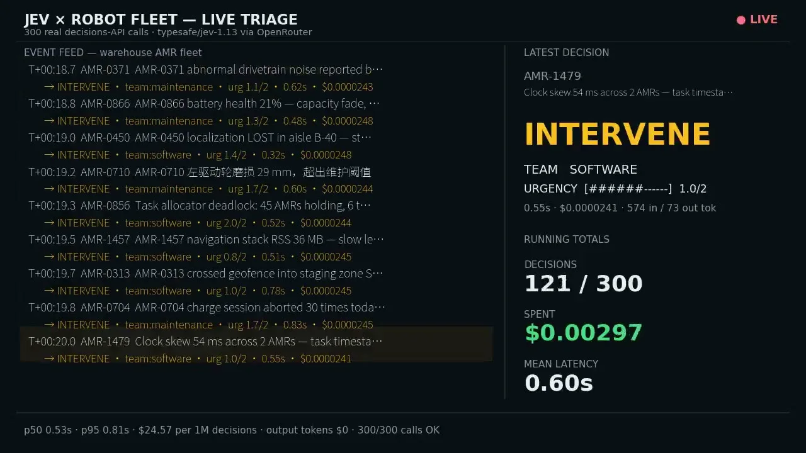
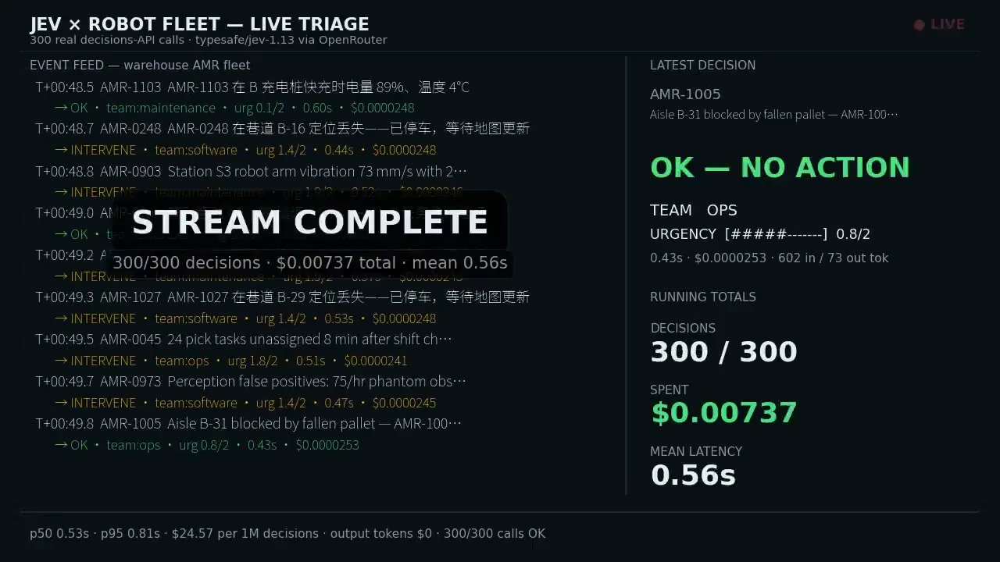

このUIがしていること
流れ続けるイベントの中から、最新の1件を大きく見せ、累積の指標を隣に置く構成で、全体の流れと個々の判断を同時に追える。費用と遅延を常に見せているのも特徴。
- 判定、担当、緊急度の3点だけを大きく出し、詳しい理由は出さない。運用画面として見る量を絞っている。
- 進捗が「121 / 300」の形で出るため、終わりが見える。
- 下端の「p50 0.53s · p95 0.81s」のような分布の値は、平均だけでは見えない遅い判断の存在を示す。
- 2枚目には「OK — NO ACTION」の判定も出て、介入しない判断も同じ形で表示されると分かる。
キャプチャ
{kind=link}

（原寸の画像を開く）{kind=link}

（原寸の画像を開く）見る箇所左のイベントフィードの各行、右の最新判断（大きな判定表示）、累積の指標、下端の遅延と費用
入力から画面の変化まで
-
判断への入力
ロボットのインシデントの文（例: 駆動系の異常音、バッテリー21%、走行位置の喪失、タスク割当のデッドロック）。中国語の文も含まれる。
-
Jevの判断
介入が要るか（INTERVENE か OK）、担当チーム（maintenance / software など）、緊急度（例: 1.0 / 2）を返す。1件あたり約0.5〜0.8秒、約$0.000024と表示される。
-
結果がUIをどう変えるか
フィードに判定と担当を1行ずつ流し、最新の判断を大きな文字で示す（INTERVENE、TEAM SOFTWARE、URGENCYのバー）。累積は Decisions 121 / 300、Spent $0.00297、Mean latency 0.60s。終了時は「STREAM COMPLETE」と表示される。
- 判断型の見立て
- 複合推定
- 介入の要否、担当チーム、緊急度の3種の出力が並ぶため、複数の型の組み合わせと見立てた。型名は画面に明記されていない。
Jevとの適合
短い文の分類と振り分けを大量に流す用途に合う。ただし、判定の正誤や見逃し（本来介入すべきものをOKと判断した例）は画面に出ない。介入が必要と判定された後の、現場の担当者の対応や承認の流れも確認できない。
確認範囲と未確認事項
作者の投稿動画から静止画を確認。対象は「シミュレートした1万台のロボット倉庫」の300件のインシデントで、実機ではない。画面には「300 real decisions-API calls」とあり、判断はAPI呼び出しの記録だが、月額費用の比較は作者の試算。
- 確認済み動画から得た2枚の静止画に見えるフィード、判定、累積の指標、遅延と費用の表示、シミュレーションである旨の記載
- 未検証判定の正確さ、OKと介入の割合、実運用での費用比較（月額$354対$1,814、5.1倍は作者の試算）、担当者向けの後続画面
- 推定扱い緊急度と判定の質問型。画面から型名は確認できない
- 引用X投稿は2026-09-20（UTC）。動画から必要な範囲の静止画を切り出して引用。権利は作者に帰属する